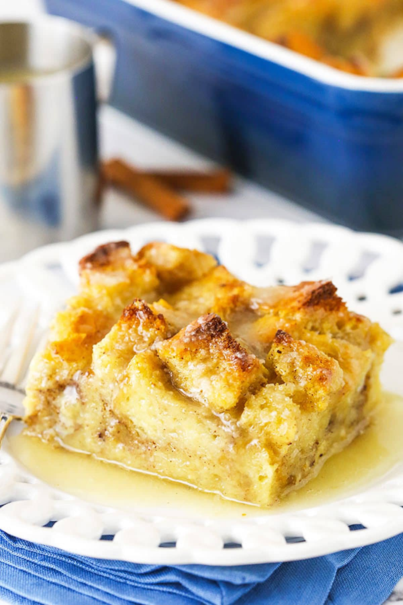

Bread Pudding

Description
Bread pudding is a dessert made with slightly stale bread and custard. The no-waste dish is so old, nobody knows quite when or where it originated. People in 13th-century England called it "poor man's pudding" because the cooks who made it couldn't afford to throw any ingredients away.
Ingredients
- 6 slices day-old bread, torn into small pieces
- 2 tablespoons unsalted butter, melted
- ½ cup raisins (Optional)
- 2 cups milk
- ¾ cup white sugar
- 4 large eggs, beaten
- 1 teaspoon ground cinnamon
- 1 teaspoon vanilla extract
Steps
- Preheat the oven to 350 degrees F (175 degrees C).
- Place bread pieces into an 8-inch square baking pan. Drizzle melted butter over bread and sprinkle raisins over top.
- Whisk milk, sugar, eggs, cinnamon, and vanilla together in a medium mixing bowl until well combinded. Pour mixture over bread, and lightly push down with a fork until all bread is covered and soaking up the liquid.
- Bake in the preheated oven until golden brown and the top springs back when lightly pressed, about 45 minutes.